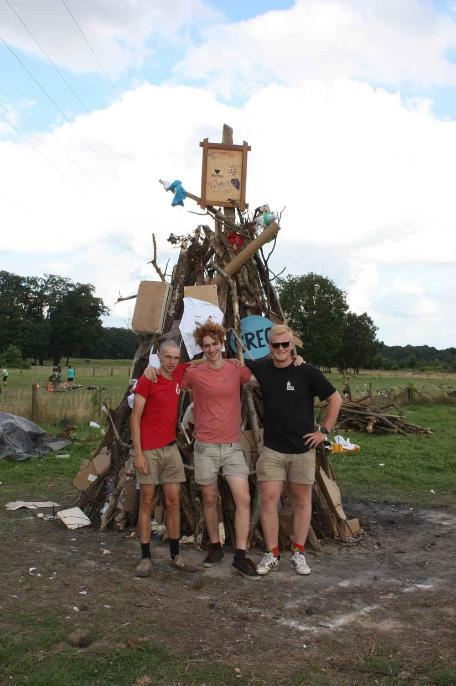
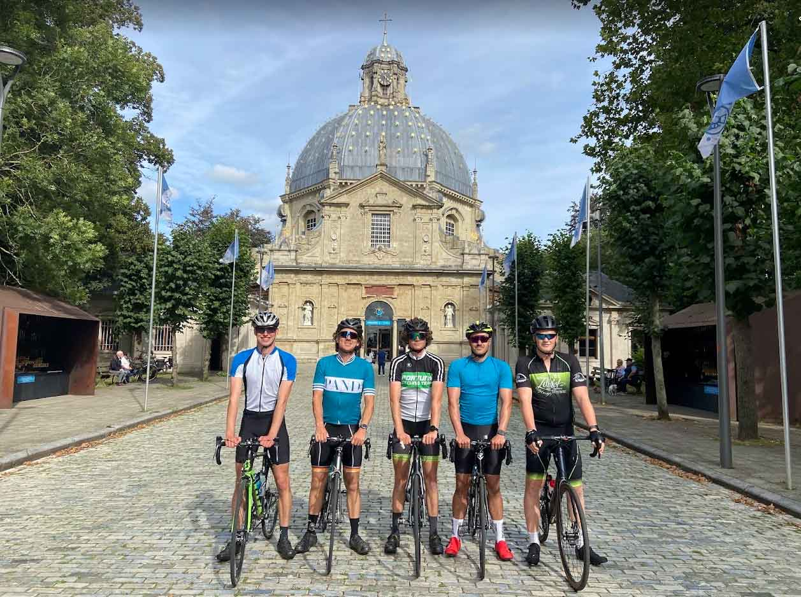
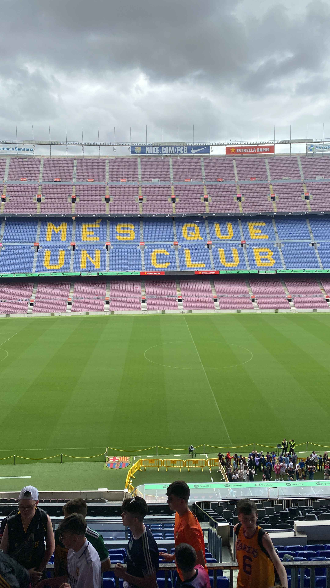
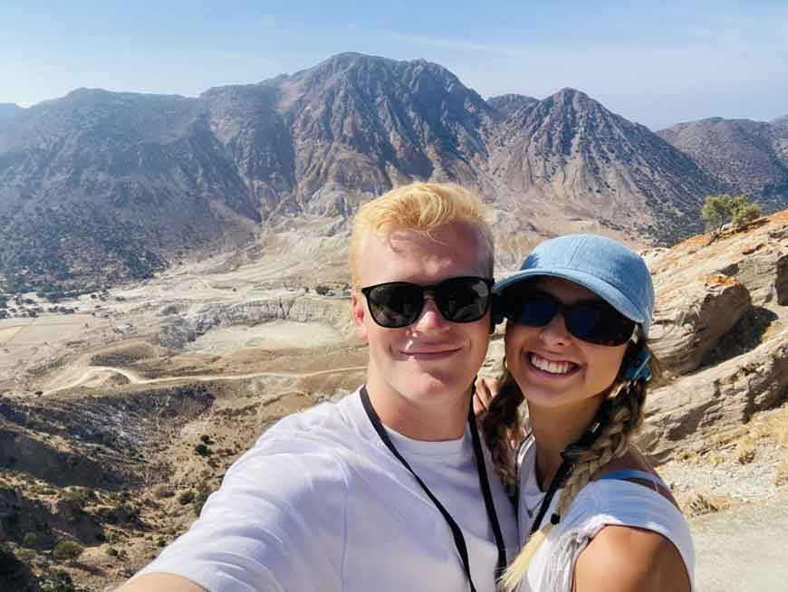
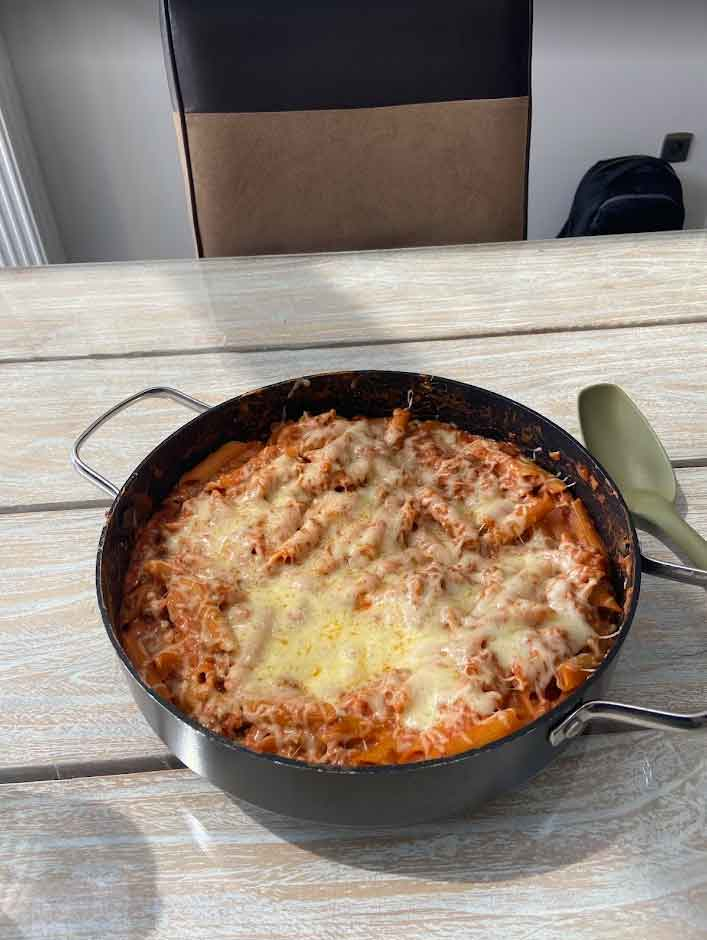

Introductie
In deze sectie vertel ik je over mijn favoriete hobby's en interesses. Elke hobby geeft me de kans om mijn creativiteit te uiten, nieuwe dingen te leren en te ontspannen. Deze hobby's vormen een belangrijk onderdeel van mijn leven. Ze helpen me niet alleen om mezelf te uiten, maar bieden ook een welkome afwisseling van het dagelijkse leven. Hieronder vind je een overzicht van mijn belangrijkste hobby's en wat ze voor mij betekenen.
Mijn Belangrijkste Hobby's
- Chiro - Leidinggeven en activiteiten organiseren.
- Fietsen - Sportieve uitstapjes met vrienden.
- Voetballen - Actief deelnemen aan een team.
- Reizen - Nieuwe culturen en plaatsen ontdekken.
- Koken - Creatief zijn in de keuken.
Chiro
Ik ga al vanaf ik 6 jaar ben naar de Chiro. Het is een plek waar ik veel vrienden heb gemaakt en waar we samen activiteiten organiseren. Ik ben nu 2de jaar leiding bij de kerels (3de & 4de middelbaar), wat inhoudt dat ik verantwoordelijk ben voor de begeleiding van de jongere leden. Dit heeft me geleerd om verantwoordelijk te zijn en leiderschap te tonen. We organiseren verschillende activiteiten, van spelletjes tot weekendkampen, wat ons helpt om als team te groeien. Het is altijd leuk om te zien hoe nieuwe leden zich ontwikkelen en zich bij onze groep voegen.
Fietsen
In mijn vrije tijd ga ik graag een rondje fietsen met mijn vrienden. Alleen wel als het op de koersfiets is. Fietsen met een gewone stadsfiets vind ik maar niets; deze gaan veel te traag voor mij. Een van mijn favoriete routes is langs de rivier, waar we genieten van het uitzicht en de frisse lucht. Fietsen helpt me niet alleen om fit te blijven, maar het biedt me ook de gelegenheid om de natuur te verkennen en nieuwe plekken te ontdekken. Vaak stoppen we onderweg voor een kopje koffie en om bij te praten, wat het een sociale activiteit maakt.
Voetballen
Sinds dat ik een kleine jongen was, hield ik van voetbal. Ik heb het jarenlang gespeeld bij KFC Herenthout. Nu speel ik cafévoetbal bij FC Valvecke. Hier is een foto toen ik in Barcelona was om het stadion te bezoeken. Voetbal heeft me niet alleen geleerd om als team te werken, maar het heeft me ook geholpen om mijn doorzettingsvermogen te versterken. Een van mijn meest memorabele ervaringen was tijdens een belangrijke wedstrijd waar we in de laatste minuut een doelpunt scoorden. De euforie na die overwinning was onvergetelijk!
Reizen
Ik hou van reizen. Hier is een foto van deze zomer toen ik en mijn vriendin een vulkaan gingen bezoeken in Griekenland. Vroeger ging ik ook altijd op cruise met mijn ouders en heb ik al vele delen van de wereld kunnen zien. Ik heb een grote passie voor het ontdekken van nieuwe culturen en gerechten. Elke reis biedt nieuwe ervaringen, van het proberen van lokale delicatessen tot het leren van nieuwe talen. Ik hoop later nog veel landen te kunnen bezoeken, en mijn droom is om een roadtrip door heel Europa te maken. Reizen biedt me de kans om mijn horizon te verbreden en meer te leren over verschillende culturen.
Koken
Hier is een foto van een pasta die ik heb gemaakt. Zeer lekker! Ik kook niet zo vaak, maar zou het vaker willen doen om er beter in te worden. Koken is hetzelfde als programmeren: je leert het alleen maar door te doen. Een van mijn favoriete gerechten om te maken is zelfgemaakte lasagne, omdat het een perfect voorbeeld is van hoe je verschillende ingrediënten kunt combineren. Het biedt me een creatieve uitlaatklep en de mogelijkheid om nieuwe smaken en gerechten te ontdekken. Vaak nodig ik vrienden uit om samen te koken en te genieten van een maaltijd, wat het nog leuker maakt.
Conclusie
Al deze hobby's maken een groot deel uit van mijn leven en helpen me om een evenwichtig leven te leiden. Ze bieden me niet alleen vreugde, maar ook kansen om te groeien en te leren. Of het nu gaat om het opbouwen van vriendschappen in de Chiro, het verkennen van de wereld of het bereiden van heerlijke maaltijden, elke hobby heeft zijn unieke waarde en betekenis voor mij. Ik kijk ernaar uit om in de toekomst meer tijd aan mijn hobby's te besteden en nieuwe ervaringen op te doen.